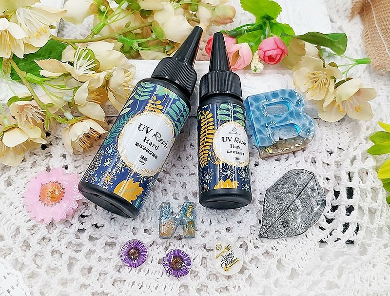
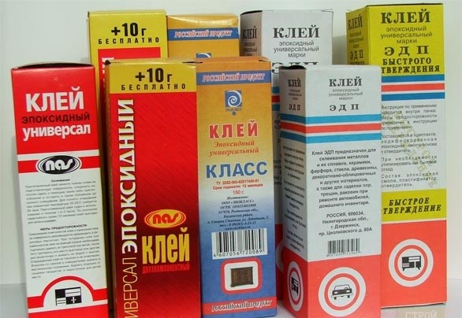

На вид промышленная эпоксидная смола без добавок выглядит как прозрачная желтоватая, темно-желтая или оранжевая жидкость,
она очень похожа на мед. Некоторые типы смол имеют коричневый цвет и напоминают
гудрон.
Добавление наполнителей может
придать смоле иной цвет – от белого до красного, черного. Ювелирная эпоксидная смола, в чистом виде, прозрачная, пригодна для
добавления красителя или других примесей.
Эпоксидки делят на два вида — горячего и холодного отверждения. Первые затвердевают
только при запекании (сильном нагревании). Вторые застывают при комнатной температуре в течение 12-24 часов.
Смолы в основном делятся на такие виды:
Эпоксидно-диановые. Включает материалы с маркировкой ЭД-20, ЭД-22, ЭД-16, ЭД-10, ЭП СМ ПРО. Их можно применять в быту, промышленности.
Они хорошо подходят для изготовления наливных полов, пропиточных компаундов, создания клеев и герметиков. Из таких смол делают разные виды пластика,
защитных покрытий.
Эпоксидно-диановые для лакокрасочных материалов. Это – эпоксидки марок Э-40, Э-40 Р, они участвуют в производстве лаков, краски,
иных покрытий, стойких к повреждению.
Эпоксидно-модифицированные — ЭПОФОМ 1, 2, 3. Входят в состав эпоксидных компаундов, участвуют в ремонте полов,
трубопроводов.
Смолы эпоксидные специального назначения. Обладают особыми свойствами, что позволяет эксплуатировать их в экстремальных условиях.
Примером можно назвать смолу ЭХД (хлорсодержащую), УП-637 (с резорцином), ЭДА и многие другие.
Ювелирная смола - двухкомпонентная, предназначена для изготовления украшений, посуды и других изделий.

Что такое УФ смола? Это прозрачный гель, который затвердевает при воздействии на него ультрафиолетовых лучей (УФ). Он состоит из одного
компонента и не требует смешивания с катализатором. При работе на освещенной солнцем поверхности, может застыть в считаные минуты
В чем же разница между промышленной и ювелирной смолой? Годится ли любая смола для изготовления украшений?

Ювелирная смола - это разновидность эпоксидных смол. В отличие от эпоксидки промышленного назначения, ювелирная смола менее токсична.
При работе с составами промышленного назначения защита кожи, глаз и дыхательных путей, обязательна. Работа с ювелирной смолой при
соблюдении элементарных правил техники безопасности, здоровью не повредит.
Не все виды смол годятся для изготовления украшений. Все смолы промышленного назначения(включая эпоксидный клей), не годятся для
литья украшения или других изделий. Для такого рода изделий существуют ювелирная и УФ смолы.